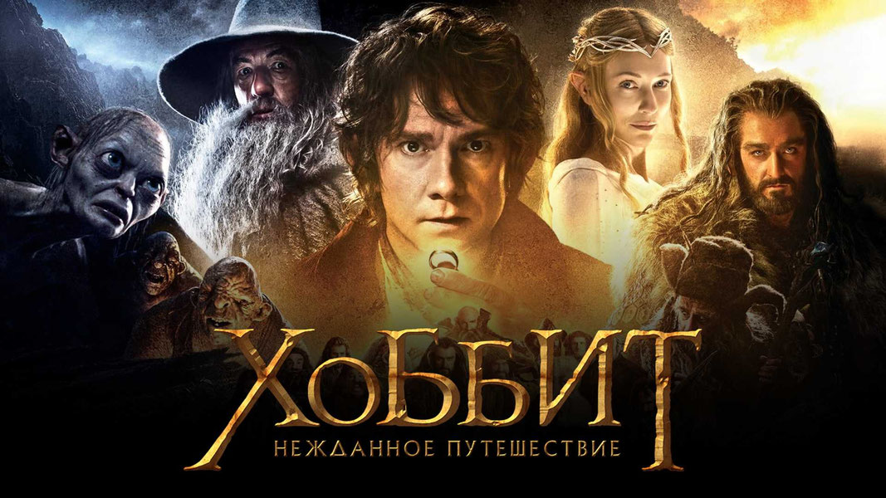
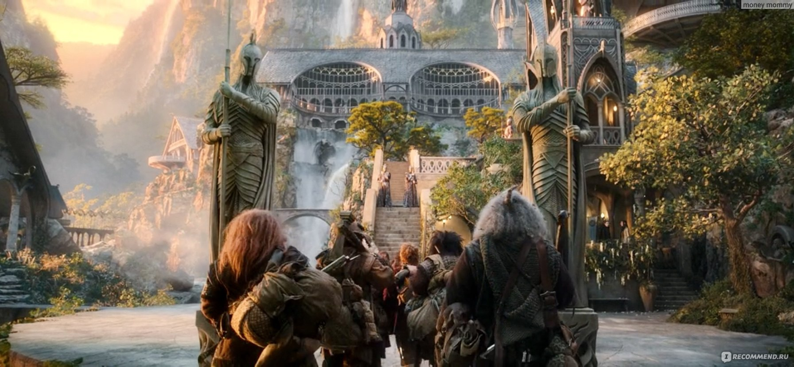
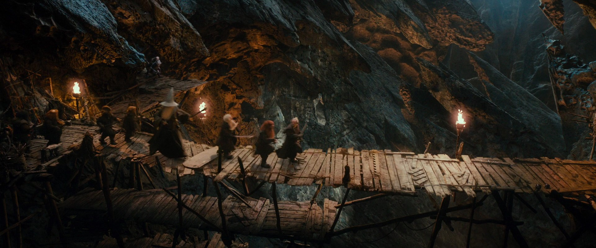
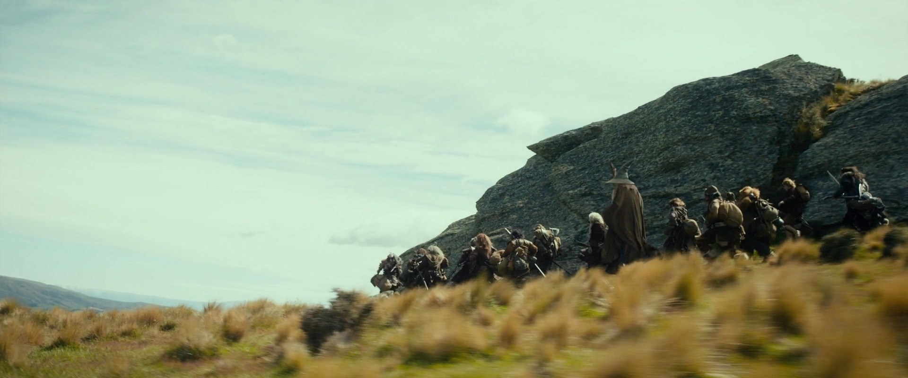
«Хоббит: Нежданное путешествие» (The Hobbit: An Unexpected Journey) — приключенческий фильм в жанре эпического фэнтези 2012 года режиссёра Питера Джексона по сценарию Фрэн Уолш, Филиппы Бойенс, Джексона и Гильермо дель Торо, основанный на романе Дж. Р. Р. Толкина «Хоббит, или Туда и обратно».
Это первый фильм кинотрилогии «Хоббит», выступающей в качестве приквела к кинотрилогии «Властелин колец». Действие происходит в Средиземье за шестьдесят лет до основных событий трилогии «Властелин колец», части фильма адаптированы из приложений к «Возвращению короля».
Фильм рассказывает историю Бильбо Бэггинса, которого волшебник Гэндальф убедил сопровождать тринадцать гномов во главе с Торином Дубощитом в поисках Одинокой горы, чтобы вернуть её у дракона Смауга.
Премьера фильма 28 ноября 2012 года состоялась в Веллингтоне, а затем 12 декабря в остальной Новой Зеландии, 14 декабря в США и 19 декабря в России компанией Warner Bros. Pictures.
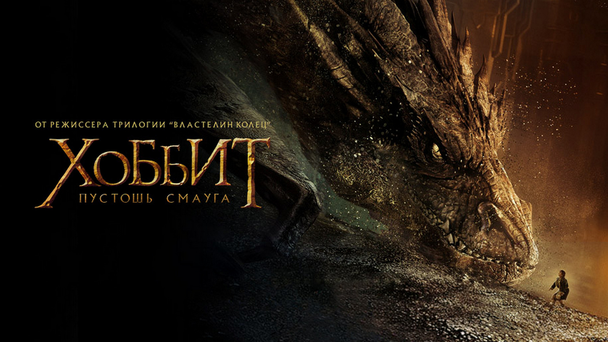
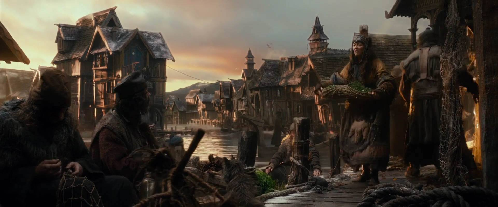
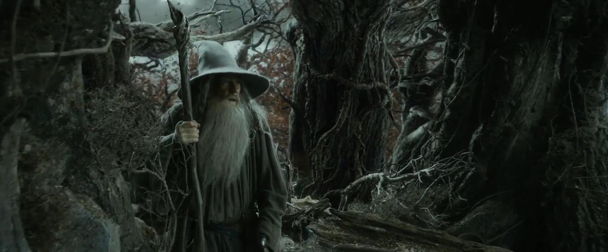
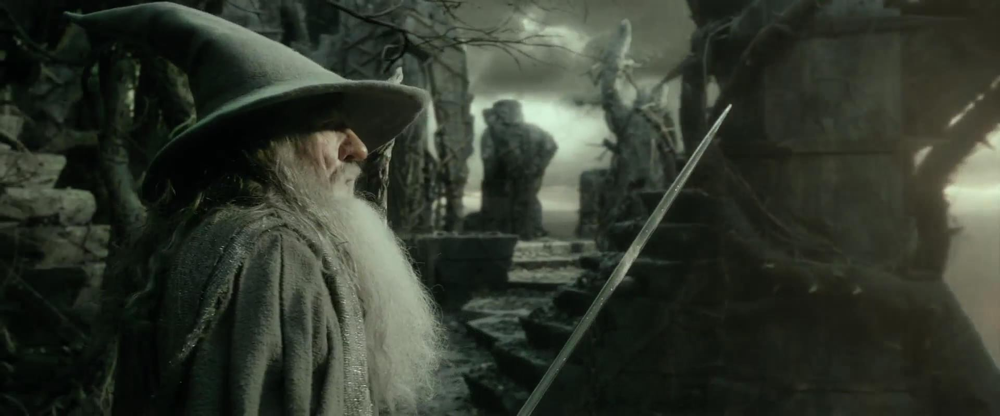
«Хоббит: Пустошь Смауга» (The Hobbit: The Desolation of Smaug) — приключенческий фильм в жанре эпического фэнтези 2013 года режиссёра Питера Джексона по сценарию Фрэн Уолш, Филиппы Бойенс, Джексона и Гильермо дель Торо, основанный на романе Дж. Р. Р. Толкина «Хоббит, или Туда и обратно». Продолжение фильма «Хоббит: Нежданное путешествие», второй фильм трилогии «Хоббит», выступающей в качестве приквела к «Властелину колец».
Фильм рассказывает о Бильбо Бэггинсе, который продолжает сопровождать Торина Дубощита и его друзей-гномов в путешествии к Одинокой горе, которую стережёт дракон Смауг. Их преследуют мстительные орки под предводительством Азога Осквернителя и его сына Болга, в то время как Гэндальф Серый расследует возвращение давно забытой злой силы в руины Дол Гулдура.
Премьера фильма состоялась 2 декабря 2013 года в Лос-Анджелесе, а затем 12 декабря в Новой Зеландии, 13 декабря в США и 18 декабря в России.
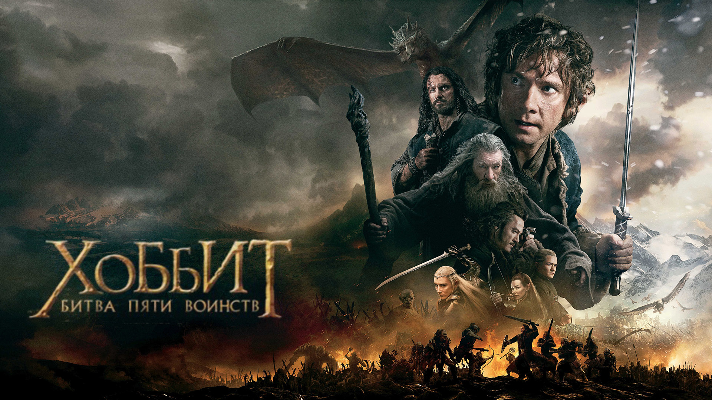
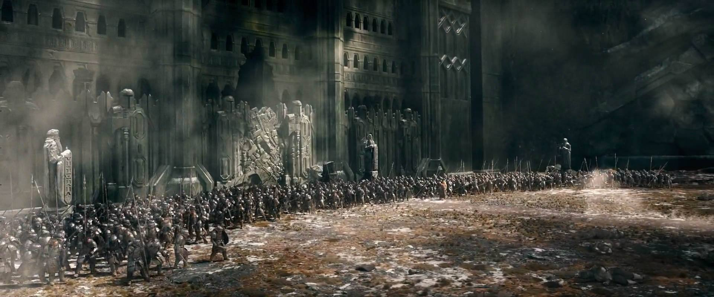
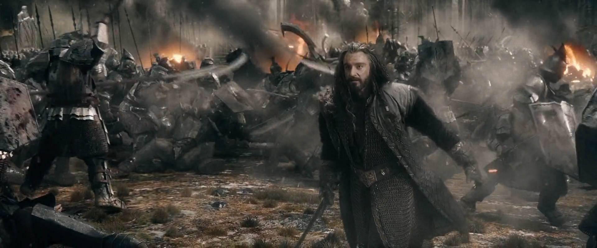
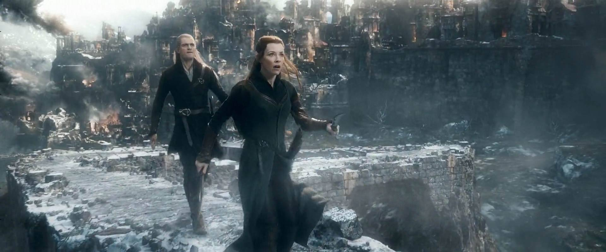
«Хоббит: Битва пяти воинств» (The Hobbit: The Battle of the Five Armies) — фильм в жанре эпического фэнтези 2014 года, поставленный режиссёром Питером Джексоном по сценарию Фрэн Уолш, Филиппы Бойенс, Джексона и Гильермо дель Торо. Основан на романе Дж. Р. Р. Толкина «Хоббит, или Туда и обратно». Продолжение фильма «Хоббит: Пустошь Смауга» и третий заключительный фильм трилогии «Хоббит», приквела к трилогии «Властелин колец».
Бильбо Бэггинс и отряд гномов во главе с Торином Дубощитом, перехитрив чудовищного дракона Смауга, занимают Одинокую гору, в то время как Азог Осквернитель вооружает и готовит к наступлению свою армию орков.
Премьера фильма состоялась 1 декабря 2014 года в Лондоне, а затем 11 декабря в Новой Зеландии и России и 17 декабря в США. Фильм получил смешанные отзывы от критиков и заработал более 962,2 миллиона долларов по всему миру, что делает его вторым кассовым фильмом 2014 года. Фильм получил множество наград; на 87-й церемонии вручения премии «Оскар» он был номинирован за «Лучший звук».
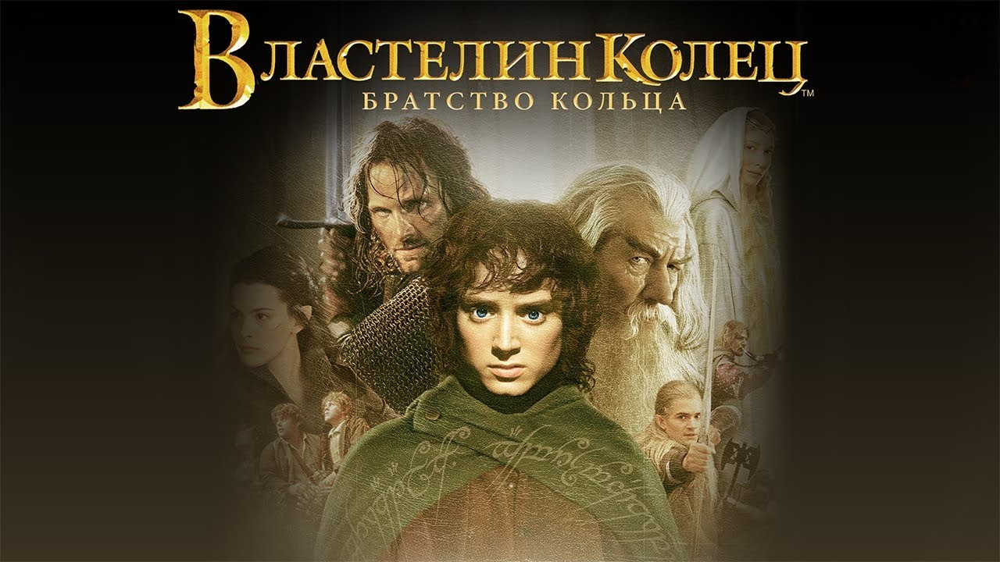
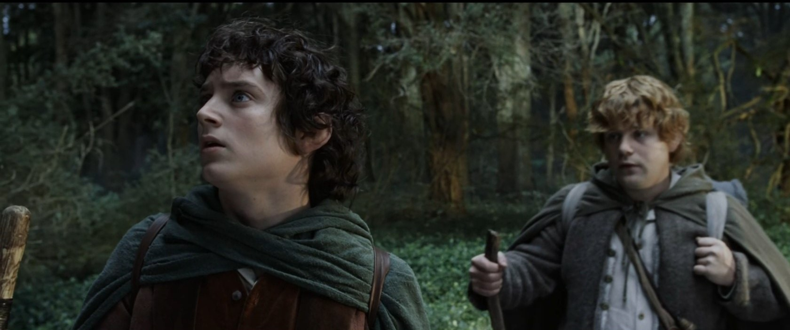
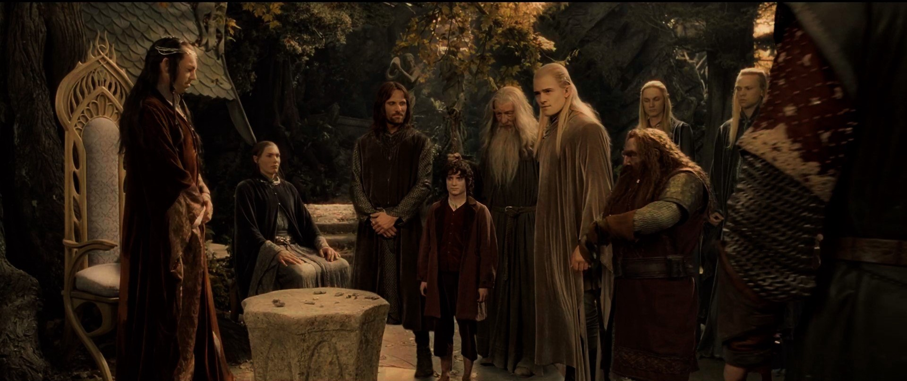
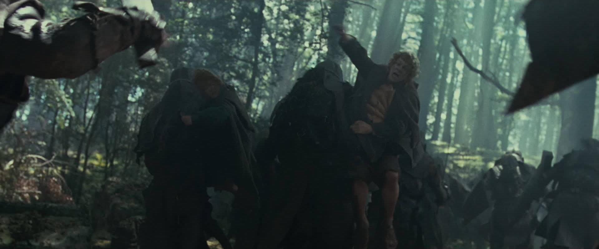
«Властелин колец: Братство Кольца» (The Lord of the Rings: The Fellowship of the Ring) — приключенческий фильм в жанре эпического фэнтези 2001 года, седьмой полнометражный фильм, снятый режиссёром Питером Джексоном по сценарию Фрэнсис Уолш, Филлипы Бойенс и Джексона, основанный на «Братстве Кольца» 1954 года, первом томе романа «Властелин колец» Джона Рональда Руэла Толкина. Фильм является первой частью кинотрилогии «Властелин колец».
Действие фильма происходит в Средиземье. История повествует о Тёмном Властелине Сауроне, который ищет Кольцо Всевластья, в котором заключена часть его могущества, чтобы вернуть себе власть. Кольцо нашло свой путь к молодому хоббиту Фродо Бэггинсу. Судьба Средиземья висит на волоске, когда Фродо и восемь его спутников, которые образуют Братство Кольца, начинают своё опасное путешествие к Роковой горе в земле Мордор, единственном месте, где Кольцо может быть уничтожено.
Премьера фильма состоялась 10 декабря 2001 года в Odeon Luxe Leicester Square в Лондоне, и вышла 19 декабря в США и 20 декабря в Новой Зеландии.
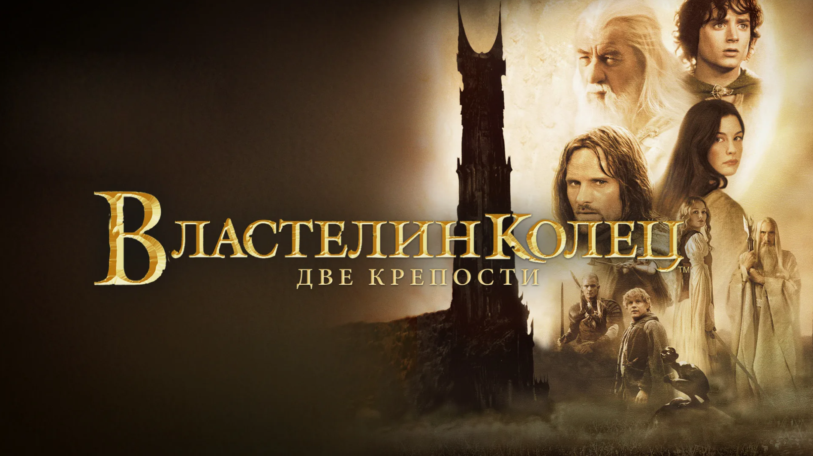
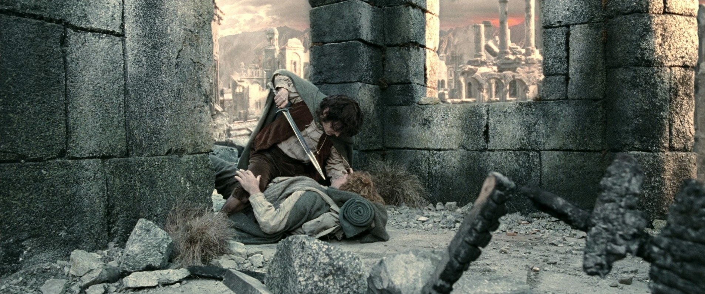
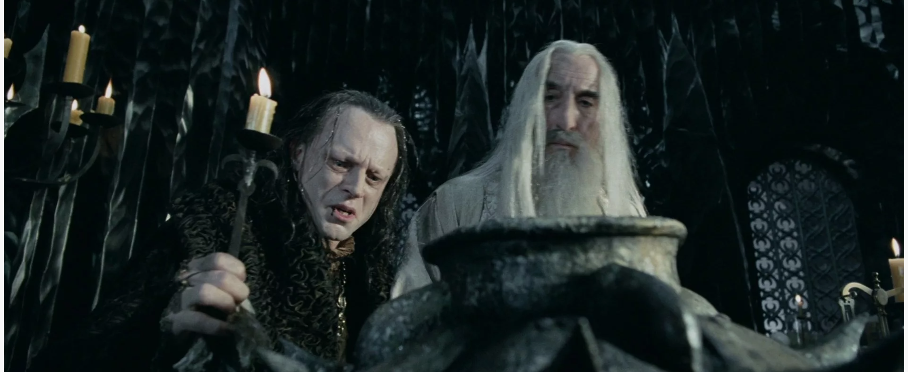
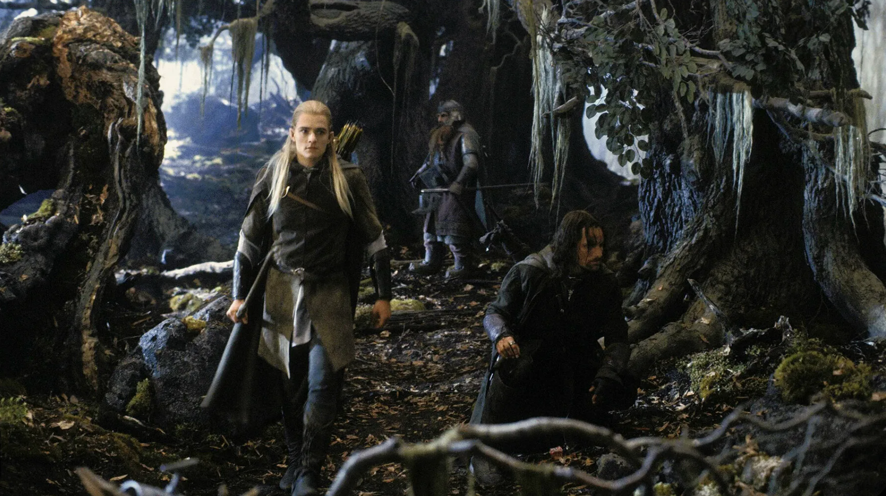
«Властелин колец: Две крепости» (The Lord of the Rings: The Two Towers) — приключенческий фильм в жанре эпического фэнтези 2002 года, восьмой полнометражный фильм, снятый режиссёром Питером Джексоном по сценарию Фрэн Уолш, Филиппы Бойенс, Стивена Синклера и самого Джексона, основанный на Двух крепостях 1954 года, втором томе романа Джона Рональда Руэна Толкина «Властелин колец». Продолжение фильма 2001 года «Властелин колец: Братство Кольца», вторая часть кинотрилогии «Властелин колец».
Продолжая сюжет предыдущего фильма, он пересекает три сюжетные линии: Фродо и Сэм продолжают свой путь в Мордор, чтобы уничтожить Кольцо Всевластья, теперь им помогает Голлум, ненадёжный бывший носитель кольца. Мерри и Пиппин сбегают от своих орков-захватчиков, встречают Энта Древоборода и помогают спланировать атаку на Изенгард, крепость Сарумана. Арагорн, Леголас и Гимли в своих поисках приходят в охваченную войной страну Рохан и воссоединяются с воскресшим Гэндальфом, прежде чем сразиться с легионами коварного волшебника Сарумана в битве при Хельмовой Пади.
Премьера состоялась 5 декабря 2002 года в театре Зигфелда в Нью-Йорке, а затем 18 декабря фильм был выпущен в США и 19 декабря в Новой Зеландии.
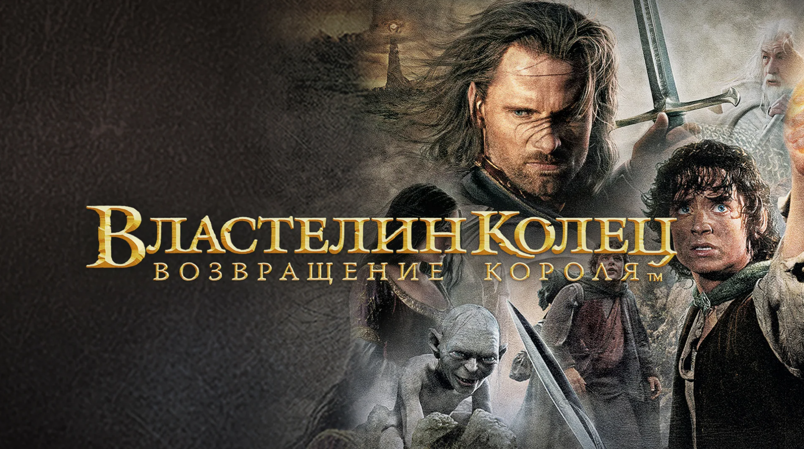
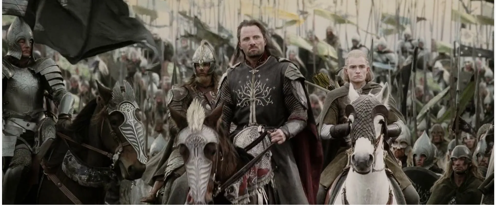
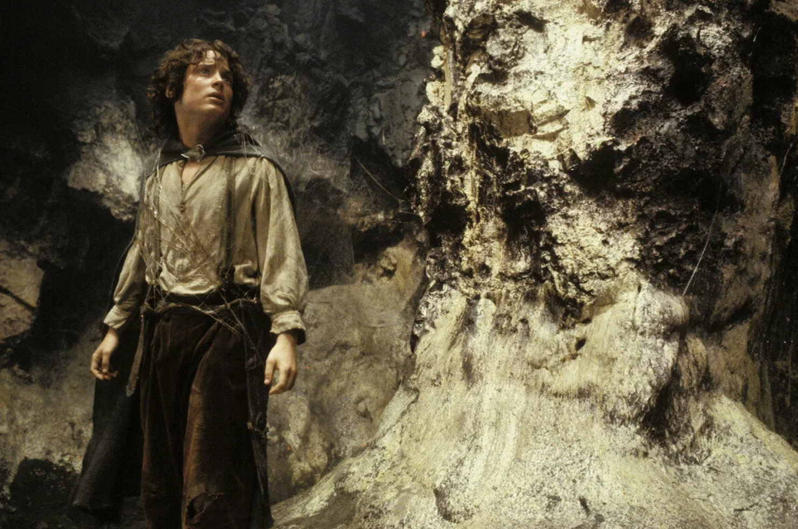
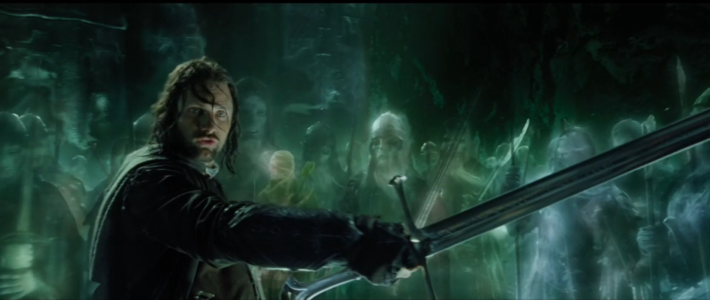
«Властелин коле́ц: Возвращение короля» (The Lord of the Rings: The Return of the King) — приключенческий фильм в жанре эпического фэнтези 2003 года, снятый режиссёром Питером Джексоном по сценарию Фрэн Уолш, Филиппы Бойенс и самого него. Основан на романе 1955 года «Возвращение короля», третьем томе романа Джона Рональда Руэла Толкина «Властелин колец». Продолжение фильма 2002 года «Властелин колец: Две крепости», третья и заключительная часть кинотрилогии «Властелин колец».
Сюжет продолжает историю предыдущего фильма: хоббиты Фродо и Сэм проникают в Мордор, продвигаясь к Роковой горе, единственное место, где можно уничтожить Кольцо Всевластья, не подозревая об истинных намерениях сопровождающего их Голлума, в то время как Мерри, Пиппин, Гэндальф, Арагорн, Леголас, Гимли и их союзники объединяют силы против Саурона и его орочьих легионов.
Премьера состоялась 1 декабря 2003 года в Embassy Theatre в Веллингтоне, а в широкий прокат вышла 17 декабря 2003 года в США и 18 декабря 2003 года в Новой Зеландии.